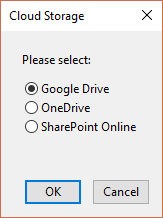
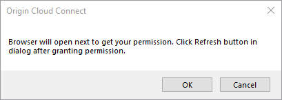
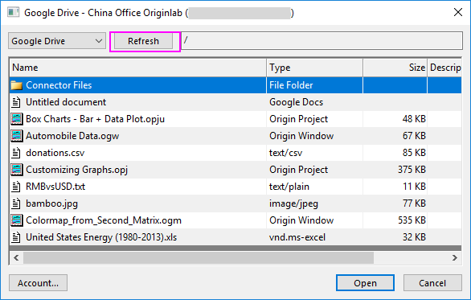
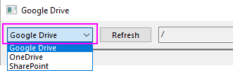
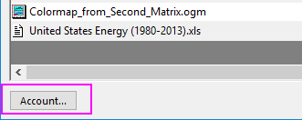

Mit Cloud verbinden oder Dateien über Cloud öffnen
Connect-to-Cloud
Der Datenkonnektor kann eine Verbindung zwischen dem Origin-Arbeitsblatt und der Datendatei in Ihrer Cloud, Google Drive, OneDrive oder SharePoint herstellen.
- Wenn Sie Daten: Mit Cloud verbinden auswählen oder auf die Schaltfläche Über Cloud öffnen
 klicken, wird ein kleiner Dialog Cloudspeicher angezeigt, in dem Sie die Cloud auswählen können, zu der Sie eine Verbindung herstellen wollen:
klicken, wird ein kleiner Dialog Cloudspeicher angezeigt, in dem Sie die Cloud auswählen können, zu der Sie eine Verbindung herstellen wollen:- 
- Wählen Sie die gewünschte Cloud. Es wird eine Meldung angezeigt, die den Genehmigungsvorgang für Ihren Cloud-Account anstößt.
- 
- Durch Klicken auf OK wird der Standardbrowser geöffnet. Melden Sie sich an Ihrem Cloud-Account an und erteilen Sie die Genehmigung. Einzelheiten zu dem Genehmigungsprozess können Sie sich in diesem Video ansehen.
- Wenn Sie die Genehmigung erteilt haben, schließen Sie das Browserfenster und klicken Sie auf die Schaltfläche Aktualisieren, um alle herunterladbaren Dateien im Dialog OneDrive/Google Drive aufzuführen.
- 
 | Node-Locked- und Concurrent-Anwender können den Menübefehl Mit Cloud verbinden und die Schaltfläche Über Cloud öffnen nicht verwenden, bevor sie ihr Origin nicht richtig aktiviert haben. Weitere Einzelheiten finden Sie in dieser FAQ.
|
Operationen im Dialog für OneDrive/Google Drive/SharePoint
- Cloudserver wechseln:
- 
- Wenn Sie diese Auswahlliste verwendet haben, um ein anderes Laufwerk zu wählen, müssen Sie erneut die Schritte zum Erteilen der Genehmigung durchgehen.
- Dateien und Ordner in Ihrer Cloud durchsuchen
- Sie dürfen die in der Tabelle aufgeführten Dateien/Ordner untersuchen.
- Zu einem anderen Account in der gleichen Cloud wechseln
- 
- Klicken Sie auf die Schaltfläche Konto, um den Browser/Dialog zum Wechseln zu einem anderen Account auf dem aktuellen Cloudserver zu öffnen.
- Zu der ausgewählten Datei eine Verbindung herstellen bzw. sie öffnen
- Wenn Sie eine Datei ausgewählt haben, klicken Sie auf die Schaltfläche Öffnen, um diese Datei zu öffnen oder eine Verbindung zu ihr herzustellen.
- Hinweis: Wenn Sie über das Menü Daten: Mit Cloud verbinden (einem Datenkonnektor) gegangen sind, ist die Datei, die Sie geöffnet haben, mit der ursprünglichen Datei verbunden. Wenn Sie die Symbolleistenschaltfläche Über Cloud öffnen genutzt haben, wird durch das Klicken auf die Schaltfläche Öffnen nur die Datei geöffnet ohne die Verbindung zur ursprünglichen Datei.
Unterstützte Dateitypen zum Verbinden oder Öffnen
Mit Dateien in der Cloud verbinden
Aktuell unterstützt das Hilfsmittel Mit Cloud verbinden das Verbinden mit den Dateien der untenstehenden Typen genauso wie die relevanten Konnektoren.
Dateien über die Cloud öffnen
Die Schaltfläche Über Cloud öffnen importiert die Daten von Ihrem Google-Drive-, OneDrive- oder SharePoint-Account in eine Origin-Arbeitsmappe, ohne einen Datenkonnektor zur Arbeitsmappe hinzuzufügen.
Über Cloud öffnen unterstützt diese Formate: